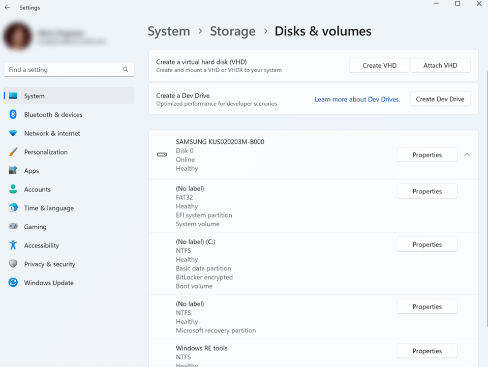
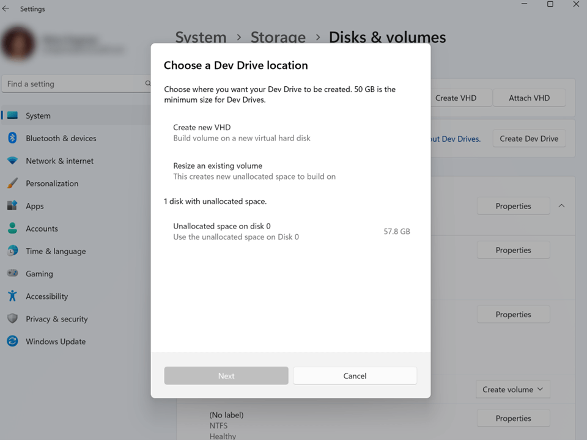
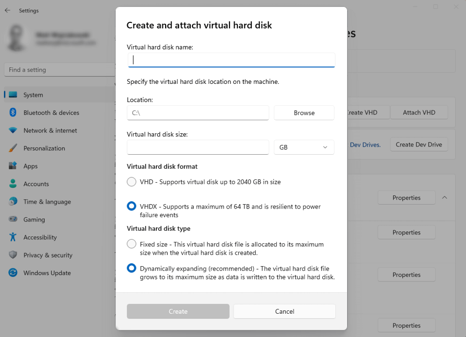
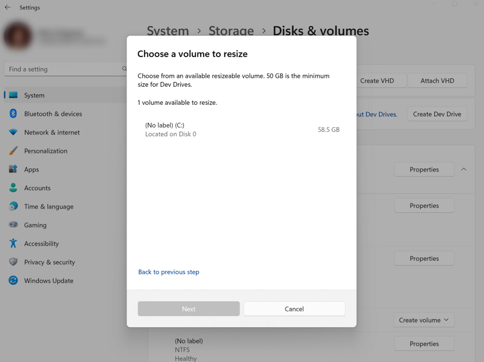
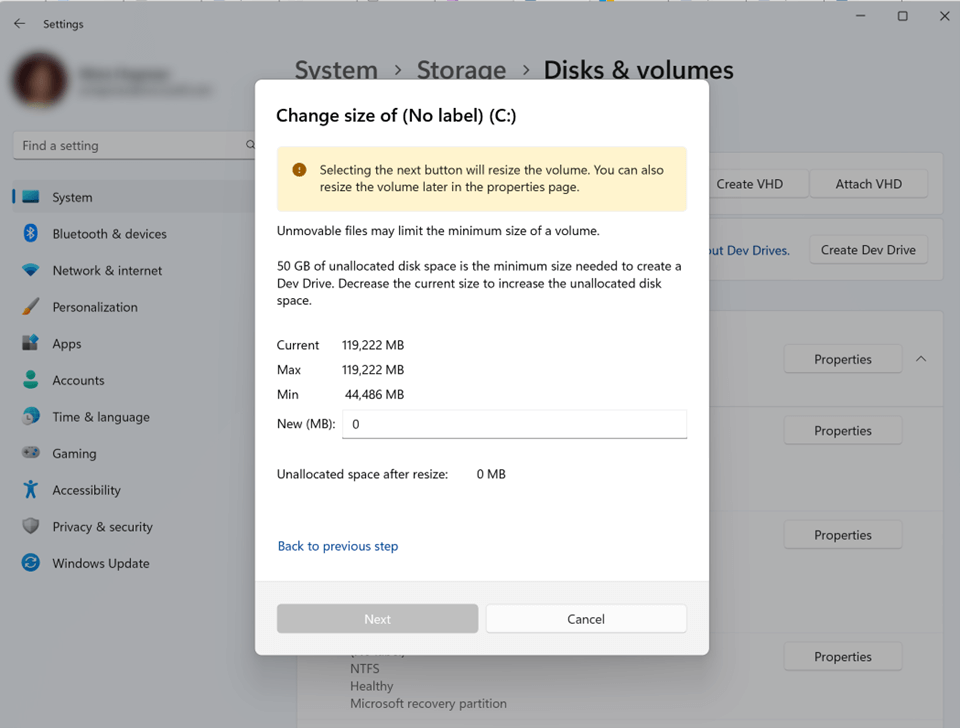
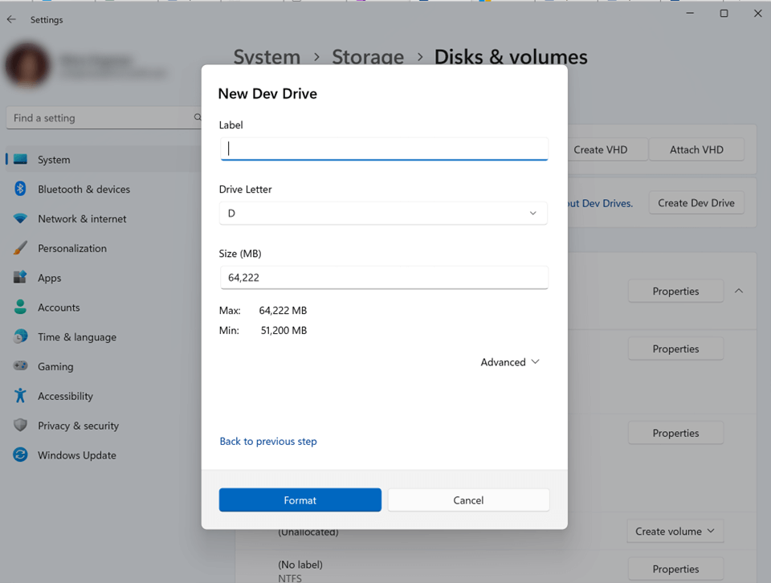
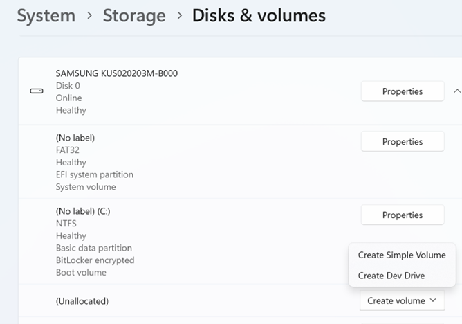
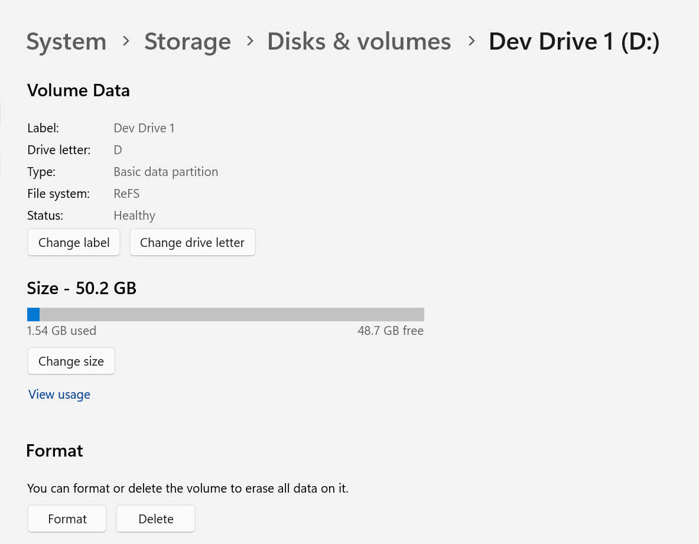
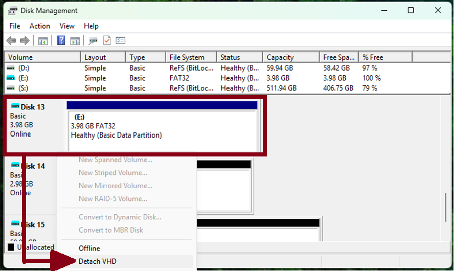

Set up a Dev Drive on Windows 11
Dev Drive is a new form of storage volume available to improve performance for key developer workloads.
Dev Drive builds on ReFS technology to employ targeted file system optimizations and provide more control over storage volume settings and security, including trust designation, antivirus configuration, and administrative control over what filters are attached.
See the blog post: Dev Drive for Performance Improvements in Visual Studio and Dev Boxes for some average improvement measurements across common dev operations.
How to set up a Dev Drive
To set up a new Dev Drive, open Windows Settings and navigate to System > Storage > Advanced Storage Settings > Disks & volumes. Select Create dev drive. Existing storage volumes cannot be converted to be a Dev Drive. The Dev Drive designation happens only at the original format time.
Before setting up a Dev Drive, ensure that the prerequisites are met.

Prerequisites
- Windows 11, Build #10.0.22621.2338 or later (Check for Windows updates)
- Recommend 16 GB memory (minimum of 8 GB)
- Minimum 50 GB free disk space
- Dev Drives are available on all Windows SKU versions.
- Local administrator permissions.
When updating to the latest Windows 11 release, you may need an additional reboot before the Dev Drive feature becomes available. If you are working in a business enterprise environment, your security administrator will need to Configure Dev Drive security policy in order to enable Dev Drive.
Warning
Dev Drive is intended only for key developer scenarios and any custom settings will still be covered by Group Policy settings in Business or Enterprise work environments. Learn more about how to Configure Dev Drive security policy.
Set up options
You will be given three options:
- Create new VHD - Build volume on a new virtual hard disk
- Resize an existing volume - Create new unallocated space to build on
- Unallocated space on disk - Use the unallocated space on an existing disk. *This option will only display if you have previously set up unallocated space in your storage.

How to choose between using a disk partition or VHD
There are advantages and trade-offs to consider when choosing whether to create a disk partition or create a new VHD to store your Dev Drive.
Create a disk partition: Storing your Dev Drive on a disk partition will generally offer faster performance because it directly uses the physical disk without any additional layers. The trade-offs are that using a partitioned disk will be less flexible, since resizing partitions can be more complex and risky, and less portability, since the partition is tied to the physical disk.
Create a new VHD: Storing your Dev Drive in a Virtual Hard Disk (VHD) may have slightly lower performance due to the overhead of managing the virtual disk layer. The trade-offs are that VHDs offer more flexibility for dynamic resizing (if you need to manage disk space efficiently), moving, or backing up data. VHDs are also highly portable,allowing the VHD file to be transferred to another machine or backup location. However, keep in mind that when a VHD is hosted on a fixed disk (HDD or SSD), it is not recommended to copy the VHD, move it to a different machine, and then continue using it as a Dev Drive.
Create new VHD
When choosing the Create new VHD option to set up a Dev Drive, you will then need to determine the following:
- Virtual hard disk name: Give a name to your VHD (Dev Drive).
- Location: Assign a directory path where the Dev Drive VHD will be located on your machine. The default location is
C:\, unless creating a Dev Drive using Dev Home, in which case the default location is%userprofile%\DevDrives. We recommend using a per-user directory path location to store your Dev Drive to avoid any unintentional sharing. - Virtual hard disk size: Assign the amount of disk space that will be allocated for the volume to use, minimum size is 50 GB.
- Virtual hard disk format:
- VHD: Supports virtual disks up to 2040 GB in size.
- VHDX (Recommended): Supports a maximum of 64 TB and offers more resilient protection against unexpected IO failure caused by issues like power outage. Learn more about Managing VHDs.
- Disk type:
- Fixed size - This virtual hard disk file is allocated to the maximum size when created.
- Dynamically expanding - The virtual hard disk file grows to its maximum size as data is written to the disk. (Recommended)
Once you complete the process of selecting between these options, your Dev Drive will be created.

Resize an existing volume or use unallocated space on an existing disk
To Resize an existing volume:
Choose a volume to resize.

Choose a new size for the volume. You will need to have at least 50 GB of unallocated space available, the minimum size needed for a Dev Drive. Once the size is set, select Next.

To format a Dev Drive on the new free space, specify the Label (drive name), Drive Letter, and Size allocation. The maximum size will be the amount of free space you allocated in the previous step, the minimum size for a Dev Drive is 50 GB.

Congratulations! You've now resized your Dev Drive.
To find and use unallocated space on an existing drive, you can open System > Storage > Disks & volumes, look through the page to see whether any storage space is listed as "Unallocated". Select Create volume and you will be given the choices to Create Simple Volume (a standard NTFS storage volume) or Create Dev Drive. To create a Dev Drive, the steps are the same as above, you will need to add a Label (drive name), Drive Letter, and confirm the Size allocation.

Format a storage volume as a Dev Drive from the command line
As an alternative to using Windows Settings, there are two options for creating Dev Drive storage volumes from the command line. Both options require that you open the command line as an Administrator. You must be a member of the Admin group to format a hard drive. These command line formatting methods may be preferred when creating multiple Dev Drives or as an admin for multiple machines.
- Using the Format command line tool from Windows CMD or PowerShell:
Format D: /DevDrv /Q
- Using the Format-Volume cmdlet from PowerShell:
Format-Volume -DriveLetter D -DevDrive
These code samples require that you replace D: with the drive location you wish to target. See the links for more options and command parameters.
How does Dev Drive work?
A Storage Volume specifies how data is stored on the file system, via directories and files, in a particular format. Windows uses NTFS for the system drive and, by default, for most non-removable drives. The Resilient File System (ReFS) is a newer Microsoft file system format, designed to maximize data availability, scale efficiently to large data sets across diverse workloads, and provide data integrity with resiliency to corruption. It seeks to address an expanding set of storage scenarios and establish a foundation for future innovations.
The Dev Drive utilizes ReFS enabling you to initialize a storage volume specifically for development workloads, providing faster performance, and customizable settings that are optimized for development scenarios. ReFS contains several file system specific optimizations to improve the performance of key developer scenarios.
Learn more about how Dev Drive handles security.
What should I put on my Dev Drive?
The Dev Drive is intended for:
- Source code repositories and project files
- Package caches
- Build output and intermediate files
Considerations for Installing Developer Tools and SDKs on Dev Drive: Developer tools and SDKs are typically placed in either an administrator or per-user location. These locations provide specific security and isolation guarantees on Windows and impact Microsoft Defender behavior. However, many tools provide the flexibility to choose the installation location, including a Dev Drive.
Before proceeding with the installation of developer tools or SDKs on a Dev Drive, evaluate the trade-offs associated with the system and asynchronous scanning to ensure it aligns with the security requirements of your device and organization. You have the option to create an administrator or per-user folder on the Dev Drive. Additionally, it is important to verify that Microsoft Defender Performance Mode (e.g., asynchronous scanning) meets your needs for handling binaries.
Note
IT Admins will want to create per-user Access Control List (ACL) folders for multi-user devices as a best practice to avoid EOP attacks.
Storing package cache on Dev Drive
A package cache is the global folder location used by applications to store files for installed software. These source files are needed when you want to update, uninstall, or repair the installed software. Visual Studio is one such application that stores a large portion of its data in the Package Cache. After changing your environment variables, you may need to either restart all open console windows or reboot the device for the new values to be applied.
Npm cache (NodeJS): Create an npm cache directory in your Dev Drive, for example
D:\packages\npm, then set a global environment variablenpm_config_cacheto that path, for examplesetx /M npm_config_cache D:\packages\npm. If you have already installed NodeJS on your machine, move the contents of%AppData%\npm-cacheto this directory. (On some systems the npm cache may be in%LocalAppData%\npm-cache). Learn more in the npm docs: npm-cache and npm config: cache.NuGet global-packages folder: The NuGet global-packages folder is used by dotnet, MSBuild, and Visual Studio. Create a user specific NuGet directory in your CopyOnWrite (CoW) filesystem. For example:
D:\<username>\.nuget\packages. Use one of the following ways to change the global-packages folder from the default location to your newly created folder (to manage the globally installed packages):Set a global environment variable
NUGET_PACKAGESto that path. For example:setx /M NUGET_PACKAGES D:\<username>\.nuget\packages.Set
globalPackagesFolder, when usingPackageReference, orrepositoryPath, when usingpackages.config, to that path in configuration settings.Set the
RestorePackagesPathMSBuild property (MSBuild only) to that path.To verify the global-packages folder, run the dotnet nuget locals command:
dotnet nuget locals global-packages --list. The restore will install and download packages into the new path. The default NuGet global-packages folder can be deleted. Learn more in the NuGet docs: Managing the global packages, cache, and temp folders.
Note
There is currently a known issue: Dotnet tool command doesn't respect nuget packages path. The .NET team is aware and investigating a fix for .NET 10 and a servicing release update for 8.0 and 9.0.
vcpkg cache: Create a vcpkg cache directory in your Dev Drive, for example
D:\packages\vcpkg, then set a global environment variableVCPKG_DEFAULT_BINARY_CACHEto that path, for examplesetx /M VCPKG_DEFAULT_BINARY_CACHE D:\packages\vcpkg. If you have already installed packages, move the contents of%LOCALAPPDATA%\vcpkg\archivesor%APPDATA%\vcpkg\archivesto this directory. Learn more in the vcpkg docs: vcpkg Binary Caching.Pip cache (Python): Create a pip cache directory in your Dev Drive, for example
D:\packages\pip, then set a global environment variablePIP_CACHE_DIRto that path, for examplesetx /M PIP_CACHE_DIR D:\packages\pip. If you have already restored pip packages and Wheels on your machine, move the contents of%LocalAppData%\pip\Cacheto this directory. Learn more in the pip docs: pip caching and see StackOverflow to Change directory of pip cache on Linux?.Cargo cache (Rust): Create a Cargo cache directory in your Dev Drive, for example
D:\packages\cargo, then set a global environment variableCARGO_HOMEto that path, for examplesetx /M CARGO_HOME D:\packages\cargo. If you have already restored Cargo packages on your machine, move the contents of%USERPROFILE%\.cargoto this directory. Learn more in the Cargo docs: Cargo Environmental Variables.Maven cache (Java): Create a Maven cache directory in your Dev Drive, for example
D:\packages\maven, then set a global environment variableMAVEN_OPTSto add a configuration setting to that path, for examplesetx /M MAVEN_OPTS "-Dmaven.repo.local=D:\packages\maven". Move the contents of%USERPROFILE%\.m2\repositoryto this directory (this includes only the dependencies, plugins, and other artifacts that Maven downloads into therepositoryfolder and uses for your projects). Learn more in the Maven docs and see StackOverflow for How to specify an alternate location for the .m2 folder or settings.xml permanently?.Gradle cache (Java): Create a Gradle cache directory in your Dev Drive, for example,
D:\packages\gradle. Then, set a global environment variableGRADLE_USER_HOMEto point to that path, for example, usesetx /M GRADLE_USER_HOME "D:\packages\gradle"in the command line to set it system-wide. After setting this variable, Gradle will use the specified directory (D:\packages\gradle) for its caches and configuration files. If you have existing Gradle files, move the contents of%USERPROFILE%\.gradleto this new directory. For more detailed information, you can refer to the Gradle documentation and explore community resources like StackOverflow for tips on managing Gradle configurations and cache directories.
Understanding security risks and trust in relation to Dev Drive
Security and trust are important considerations when working with project files. Typically, there is a tradeoff between performance and security. Using a Dev Drive places control over this balance in the hands of developers and security administrators, with a responsibility for choosing which filters are attached and the settings for Microsoft Defender Antivirus scans.
Antivirus filters, including both Microsoft Defender and 3rd-party antivirus filters, are attached to a Dev Drive by default. Microsoft Defender Antivirus defaults to the new "performance mode" setting on Dev Drives, taking speed and performance into account, while providing a secure alternative to folder exclusions. For an increased level of protection, Microsoft Defender also offers "Real-time protection mode".
Any product or features requiring additional filters will not work unless the filter is added to Dev Drive.
Warning
Dev Drives can be run with no antivirus filters attached. Exercise extreme caution! Removing antivirus filters is a security risk and means that your storage drive will not be covered by the standard security scans. You are responsible for evaluating the risks associated with detaching antivirus filters and should only do so when confident that your files stored on the Dev Drive will not be exposed to malicious attacks.
Microsoft recommends using the default performance mode setting when using a trusted Dev Drive.
What is a “trusted” Dev Drive?
Dev Drives are automatically designated as trusted using a flag stored in the system registry during the original formatting time, providing the best possible performance by default. A trusted Dev Drive means that the developer using the volume has high confidence in the security of the content stored there.
Similar to when a developer chooses to Add an exclusion to Windows Security, the developer takes on the responsibility for managing the security of the content stored in order to gain additional performance.
A Dev Drive marked as trusted is a signal for Microsoft Defender to run in performance mode. Running Microsoft Defender in performance mode provides a balance between threat protection and performance. Real-time protection will still be enabled on all other storage volumes.
Due to the security considerations of having filters detached, transporting a dev drive between machines will result in the volume being treated as an ordinary volume without special filter attach policies. The volume needs to be marked as trusted when it is attached to a new machine. See How do I designate a Dev Drive as trusted?.
An untrusted Dev Drive will not have the same privileges as a trusted Dev Drive. Security will run in real-time protection mode when a Dev Drive is untrusted. Exercise caution if designating trust to a Dev Drive outside of the time that it is first created.
How do I designate a Dev Drive as trusted?
To designate a Dev Drive as trusted:
- Open PowerShell (or CMD) with elevated permissions by right-clicking and selecting "Run as Administrator".
- To designate your Dev Drive as trusted enter the command below, replacing
<drive-letter>with the letter of the storage drive you are designating trust to. For example,fsutil devdrv trust D:.
fsutil devdrv trust <drive-letter>:
To confirm whether a Dev Drive is trusted, enter the command:
fsutil devdrv query <drive-letter>:
The C: drive on your machine cannot be designated as a Dev Drive. Developer tools, such as Visual Studio, MSBuild, .NET SDK, Windows SDK, etc, should be stored on your C: drive and not in a Dev Drive.
What is Microsoft Defender performance mode?
Performance mode is now available on Windows 11 as a new Microsoft Defender Antivirus capability. This capability reduces the performance impact of Microsoft Defender Antivirus scans for files stored on a designated Dev Drive.
To learn more about performance mode and how it compares with real-time protection, see Microsoft Defender: Protecting Dev Drive using performance mode.
For performance mode to be enabled, the Dev Drive must be designated as trusted and Microsoft Defender Real-time protection must be set to "On".
How do I configure additional filters on Dev Drive?
By default, Filter Manager will turn OFF all filters on a Dev Drive, with the exception of antivirus filters. An antivirus filter is a filter that's attached in the FSFilter Anti-Virus altitude range (i.e., 320000-329999). FSFilter Anti-Virus includes filters that detect and disinfect viruses during file I/O.
The default policy can be configured not to attach antivirus filters to Dev Drive using fsutil. CAUTION: This policy applies to ALL Dev Drives on the system.
fsutil devdrv enable /disallowAv
The command, fsutil devdrv enable [/allowAv|/disallowAv], includes the following two options:
disallowAv: Specifies that your Dev Drive(s) do not have any attached filters (not even antivirus). Filters can be added back usingfsutil devdrv setfiltersallowed <Filter-1>command. (Replacing<Filter-1>with the name of your desired filter.)allowAv: Specifies that Dev Drives are to be protected by the default antivirus filter.
For help, enter the command: fsutil devdrv enable /?. If neither /allowAv nor /disallowAv is specified, the antivirus policy for your Dev Drive is not configured and the system default is to have Dev Drives protected by antivirus filter.
Warning
Exercise extreme caution when detaching filters. Detaching antivirus filters is a security risk and means that your storage will not be covered by the standard Microsoft Defender real-time protection or performance mode scans. You are responsible for evaluating the risks associated with detaching antivirus filters and should only do so when confident that your files will not be exposed to malicious attacks.
To learn more about filters, see About file system filter drivers, Installing a filter driver, Filter Manager Concepts, Load order groups and altitudes for minifilter drivers.
Allowing select filters to attach on Dev Drive
If you are working in a Business or Enterprise environment, your company's group policy may be configured for select filters to attach on Dev Drives, in addition to the above policy. A system administrator may also choose to attach additional filters to a specific Dev Drive or all Dev Drives using an allow list.
A system admin may want to add a filter called "Foo", we will refer to it as FooFlt. They may only want that filter enabled on the Dev Drive mounted as D:. They do not need this filter on another Dev Drive mounted as E:. The admin can make changes to an allow list of filters on the Dev Drive using fsutil.exe, a system-supplied command line utility.
Filters specifically set as Allowed can attach to a Dev Drive in addition to antivirus filter policy discussed above.
Allow list filter examples
The following examples demonstrate an administrator's ability to set filters allowed on all Dev Drives on a machine, using an allow list.
To use the setfiltersallowed command to allow Filter-01 and Filter-02 on all Dev Drives, use the command:
fsutil devdrv setfiltersallowed Filter-01, Filter-02
To display the filter attach policy for all Dev Drives, use the command:
fsutil devdrv query
The result will display the following:
- Developer volumes are enabled.
- Developer volumes are protected by antivirus filter.
- Filters allowed on any Dev Drive:
Filter-01,Filter-02
To change this Dev Drive configuration to allow only Filter-03 on your Dev Drive(s), with Filter-01 and Filter-02 no longer allowed to attach, use the command:
fsutil devdrv setfiltersallowed Filter-03
See fsutil devdrv /? for other related commands.
Filters for common scenarios
The following filters may be used with Dev Drive:
| Scenario: Description | Filter Name |
|---|---|
| GVFS: Sparse enlistments of Windows | PrjFlt |
| MSSense: Microsoft Defender for Endpoint for EDR Sensor | MsSecFlt |
| Defender: Windows Defender Filter | WdFilter |
| Docker: Running containers out of Dev Drive | bindFlt, wcifs |
| Windows Performance Recorder: Measure file system operations | FileInfo |
| Resource Monitor: Shows resource usage. Required to show file names in Disk Activity | FileInfo |
| Process Monitor - Sysinternals: Monitor file system activities | ProcMon24 |
| Windows Upgrade: Used during OS Upgrade. Required if user moves TEMP environment variable to Dev Drive | WinSetupMon |
| Windows Defender Application Control (WDAC): Managed installer tracking with AppLocker identity services | applockerfltr |
The WdFilter is attached by default. The following command is an example demonstrating how to attach all of these additional filters to a Dev Drive:
fsutil devdrv setfiltersallowed "PrjFlt, MsSecFlt, WdFilter, bindFlt, wcifs, FileInfo, ProcMon24"
Tip
To determine the filters required for a specific scenario, you may need to temporarily mark a Dev Drive as untrusted. Then, run the scenario and make note of all filters that attached to the volume. Designate the Dev Drive as trusted again and then add the filters to the Allow list for that Dev Drive to ensure the scenario succeeds. Finally, remove any filters that may not be needed, one at a time, while ensuring that the scenario works as expected.
Tip
The filter name for Process Monitor may change. If adding the filter name "ProcMon24" doesn't seem to capture file system activities on a Dev Drive, list the filters using the command fltmc filters, find the filter name for Process Monitor, and use that name instead of "ProcMon24".
Block Cloning Support
Beginning in Windows 11 24H2 & Windows Server 2025, Block cloning is now supported on Dev Drive. Because Dev Drive utilizes the ReFS file system format, Block cloning support will mean free performance benefits whenever you copy a file using Dev Drive. Block cloning allows the file system to copy a range of file bytes on behalf of an application as a low-cost metadata operation, rather than performing expensive read and write operations to the underlying physical data. This results in faster copy completion, less I/O to the underlying storage, and improved storage capacity by enabling multiple files to share the same logical clusters. Learn more about Block cloning.
What scenarios are unsupported by Dev Drive? What are the limitations?
There are a few scenarios in which we do not recommend using a Dev Drive. These include:
- Reformatting an existing storage volume to be a "Dev Drive" will destroy any content stored in that volume. Reformatting an existing volume while preserving the content stored there is not supported.
- When you create a Virtual Hard Disk (VHD) hosted on a fixed disk (HDD or SSD), it is not recommended to copy the VHD, move it to a different machine, and then continue using it as a Dev Drive.
- A volume stored on a removable or hot-pluggable disk (such as a USB, HDD, or SSD external drive) does not support designation as a Dev Drive.
- A volume in a VHD hosted by a removable or hot-pluggable disk does not support designation as a Dev Drive.
- The C: drive on your machine cannot be designated as a Dev Drive.
- The purpose of a Dev Drive is to host files for building and debugging software projects designated to store repositories, package caches, working directories, and temp folders. We do not recommend installing applications on a Dev Drive.
- Using Dev Drive on Dynamic Disks is unsupported. Instead, use Storage Spaces, which will help protect your data from drive failures and extend storage over time as you add drives to your PC.
How to delete a Dev Drive
You can delete a Dev Drive in the Windows 11 System Settings: System > Storage > Disks & volumes.
Open Windows Settings menu, then choose Storage, then Advanced Storage Settings, then Disks & volumes, where you will find a list of the storage volumes on your device. Select Properties next to the Dev Drive storage volume that you want to delete. In the drive's properties, you will find the option to Delete under the Format label.

The Dev Drive will now be deleted. However, if the Dev Drive was created as a new VHD, the VHD will need to be deleted to reclaim the storage space used by that VHD. To accomplish this, you must detach the virtual disk so that the VHD file hosting the Dev Drive can be deleted, following these steps:
- Open the Disk Management tool by entering "Computer Management" in the search box on the taskbar. Select Disk Management under the Storage heading. Select the Disk (not the Volume) of the Dev Drive. Right-click the selected Disk hosting the Dev Drive and, from the resulting menu, select Detach VHD.
- A pop-up window will appear informing you that detaching a virtual hard disk will make it unavailable.
- Once detached, the VHD can be deleted.

Dev Drive FAQs
Some frequently asked questions about Dev Drive, include:
How can I customize a Dev Drive to meet my needs?
The Dev Drive default settings have been optimized for common development scenarios, but can be customized, allowing control over drivers and services run on the storage volume. To customize Dev Drive settings, open the Settings menu. Under System > Storage > Disks & volumes, go to Properties.
Important
If working for a business or enterprise, the Dev Drive would still be managed by your enterprise settings. Some customizations may therefore be unavailable depending on the company policy.
Do I need to reinstall my applications to use a Dev Drive?
No, applications or tools installed on your machine’s C: drive can utilize files from a Dev Drive. For development projects, however, we recommend storing any project-specific directories, files, and package caches inside the Dev Drive. The Dev Drive can be pinned to File Explorer’s Quick Access as a reminder.
Does ReFS use more memory than NTFS does?
Yes, ReFS uses slightly more memory than NTFS. We recommend a machine with at least 8 GB of memory, ideally 16 GB.
Can I have more than one Dev Drive on my machine?
Yes. If you have the space, you can create as many Dev Drives as you would like. Using a separate Dev Drive for each software development project would allow you to simply delete the drive at the end of development, rather than repartitioning your disk again. However, keep in mind that the minimum size for a Dev Drive is 50 GB.
What do I need to know about using Dev Drive with Visual Studio?
Once you have a Dev Drive created, Visual Studio will automatically recognize it when you're creating a new project, or cloning an existing project, and pick that filepath by default. To optimize performance when using Visual Studio, we recommend moving any project code, package caches, and Copy on write MS Build tasks to the Dev Drive that may have previously been saved elsewhere. (See How to change the build output directory in the Visual Studio docs.) We also recommend that you consider redirecting %TEMP% and %TMP% envvars to Dev Drive. This will require also adding the WinSetupMon filter, which is needed for the Windows Update process. (See Filters for common scenarios. Many programs use these, so beware of potential side effects. We also recommend using performance mode for Microsoft Defender for asynchronous performance gains using Dev Drive. Turning Microsoft Defender completely off may result in the most maximum performance gains, but this may increase security risks and is a setting controlled by the system admin.
For more information, see the blog post: Dev Drive for Performance Improvements in Visual Studio and Dev Boxes.
Does Dev Drive work with WSL project files?
You can access Dev Drive project files, which run on the Windows file system, from a Linux distribution running via WSL. However, WSL runs in a VHD and for the best performance files should be stored on the Linux file system. WSL is out of the scope of Windows file system so you should not expect to see any performance improvement when accessing project files in Dev Drive from a Linux distribution running via WSL.
What method is used to format a Windows storage volume?
See MSFT_Volume class in the Windows Driver docs.
How to configure and use Live Unit Testing with a Dev Drive?
You can find guidance on How to configure and use Live Unit Testing in the Visual Studio documentation. However, be aware that there is a dependency on ProjFS. You will need to move the Live Unit Testing workspace root to the Dev Drive and add Windows Projected File System to the allowed filter list. You can do so using the following command in PowerShell:
fsutil devdrv setfiltersallowed PrjFlt
Will a VHD created for use as a Dev Drive be encrypted when the drive storing it is BitLocker enabled?
Yes, the Dev Drive VHD will be included in the BitLocker encryption of the hosting volume. It is not necessary to enable BitLocker on the mounted VHD.
Can Dev Drive make Java development faster on Windows?
Yes, using a Dev Drive can enhance efficiency and reduce build times when working on a Java development project. See the blog post "Speed up your Java Development on Windows with Dev Drive".
Can Dev Drive Performance Mode be applied to Antivirus programs besides Microsoft Defender?
Dev Drive Performance Mode is specifically a Microsoft Defender Antivirus capability related to Defender’s real-time protection. When using alternative Antivirus programs with Dev Drive, Performance Mode will not be applied, but it is possible to adjust the Allow List of security filters that are attached to the Dev Drive in order to find the right balance between performance and security for your development work. You will need to ensure that you understand the function of any attached filters when making changes to the attached filter list. Find a list with descriptions in Filters for common scenarios.
How can I find a Dev Drive that I created and lost track of?
When a dev drive is mounted but you forgot where its located, the following methods can be used to find it:
Use DiskPart and the "list vdisk" command to show the full path to the vhdx: 1) Open a command line and enter
diskpart, 2) Once DiskPart opens, enterlist vdisk.Use Powershell and "Get-Disk | Select-Object FriendlyName,Location]": Open PowerShell and enter
Get-Disk | Select-Object FriendlyName,Location.
How to contribute to these docs and FAQs?
If you find any issues in this documentation or would like to contribute additional FAQ suggestions, visit the Windows Dev Docs open source repo on GitHub.